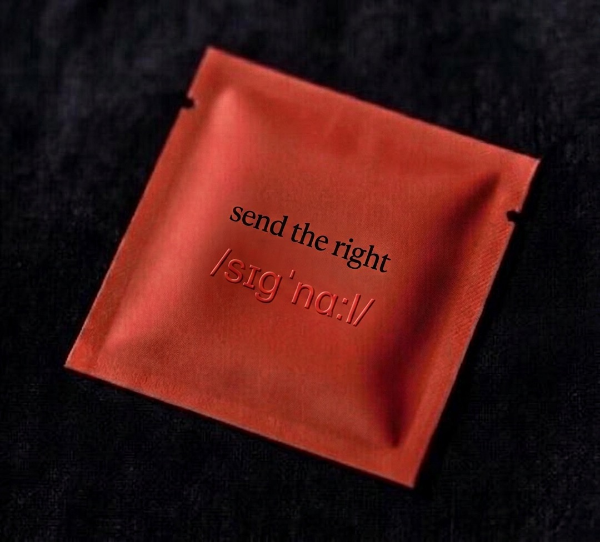
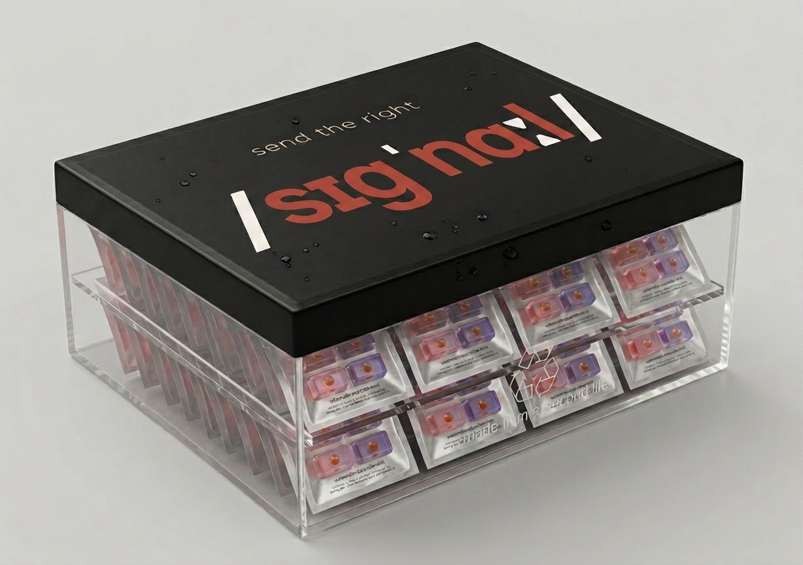

send the right
/sɪɡˈnɑːl/
the chew that fuels every cell.
Aging isn't a calendar. It's an energy economy. Every cell in your body needs ATP to do its job — repair DNA, build collagen, clear damaged proteins, hold water in skin tissue, fire a thought. When the energy declines, none of those jobs stop. They just underperform. That's what "aging" actually looks like at the cellular level.
Foundation: Weissig 2025, "Mitochondrial dysfunction as the 'mother' of all hallmarks of aging." See slide 3.
For decades, the science of aging has been a list of separate problems. The 2023 update to the canonical "Hallmarks of Aging" paper names twelve of them: telomere attrition, genomic instability, epigenetic drift, loss of proteostasis, mitochondrial dysfunction, cellular senescence, stem cell exhaustion, altered intercellular communication, deregulated nutrient sensing, dysbiosis, chronic inflammation, disabled macroautophagy.
Twelve hallmarks. Twelve research silos. Twelve different supplements promising to treat each one in isolation. And almost all of them — collagen for skin, NAD+ for sirtuins, melatonin for sleep, urolithin for autophagy — are reaching for a downstream symptom.
In 2025, Volkmar Weissig (President, World Mitochondria Society) published a review article arguing that mitochondrial dysfunction sits upstream of all eleven other hallmarks. Mitochondria don't just produce ATP — they also run intercellular communication via signaling molecules (mtDAMPs, mitochondrial-derived peptides, cardiolipin). When the energy economy fails, every cellular maintenance process — DNA repair, autophagy, telomere maintenance, collagen synthesis — starts underperforming because it can't run without ATP.
— the line that crystallized this thesis (young_goose_skincare, crediting Weissig)
Walk into any wellness store and look at what's selling. Collagen powder treats skin structure. NAD+ precursors target sirtuin activation. Melatonin nudges sleep onset. Urolithin A pushes autophagy. Each one picks one downstream hallmark and tries to push it directly.
It's not that they don't work. It's that they're all reaching downstream of the same upstream system. If your cells don't have the energy to do their jobs, no amount of raw material reaches the cellular machinery that actually uses it. You can pour collagen into a body that can't synthesize it. You can supply NAD+ to mitochondria that can't run it. The bottleneck isn't the substrate. The bottleneck is the energy economy.
signal isn't another beauty supplement. It's the substrate underneath the substrate — the formulation built around protecting and supporting the energy production that lets every other system actually do its job. The launch SKU expresses this in skin (because skin is one of the most visible markers of cellular energy decline). Future SKUs will express it in other systems.
other supplements treat symptoms. signal supports the energy that runs them all.
signal is a dissolvable chew with a clinical-dose formulation built around two principles: (1) protect the cellular energy infrastructure (mitochondrial membranes), and (2) supply the substrates the energized cells actually use to do the visible work (in the launch SKU, that visible work is skin hydration and structure).
One of the most-studied protectors of mitochondrial membranes. Crosses the blood-brain barrier. Crosses the blood-retinal barrier. Concentrates in lipid bilayers where energy production happens. The single ingredient most directly tied to the cellular energy thesis.
The raw material your skin cells use to build the dermal water reservoir — once they have the energy to do it. Low molecular weight for intestinal absorption. The exact dose used in the human RCTs that proved oral HA improves skin hydration.
The raw material for the skin's barrier lipids. Rice-derived, gluten-free. Multiple RCTs at this dose show reduced transepidermal water loss and improved skin hydration — provided the cells doing the assembly have ATP.
Vitamin E protects mitochondrial lipids from oxidation. Vitamin C is a cofactor for ATP-adjacent enzymatic reactions. Zinc and selenium support the antioxidant defense that protects energy production. All at 100% DV.
The format: 90-second dissolvable chew. No water, no mixing, no friction. 4 chews per packet, 60 packets per container, 2 months. The format is the moat — covered in slide 6.
Nothing like this exists in the longevity-adjacent beauty category. A dissolvable chew with a liquid-center flavor burst, tear-open packet, 60-packet container. The format is the moat — a supplement that reads as a product, not a regimen.


4 chews per packet. 1 packet = 1 serving. Laser-scored V-notch for clean tear. The clear PET back window reveals the product before you open it — the ritual starts at the packet before the first bite.

Xylitol shell, progressive dissolve, liquid-center flavor burst at ~10 seconds. The taste moment is the felt-feedback — the receipt that something is happening, every morning, before you can see results in the mirror.

Deep Evening primary box. Recyclable paperboard with foil-stamped wordmark. Premium unboxing without plastic clamshell. Ships every two months.
Grüns proved the packet-in-container architecture is worth $1.2B. signal applies the same daily-packet ritual to a different category — longevity-adjacent beauty — and we're the first ones here.
signal's thesis is built on two layers of evidence: (1) the published RCTs on the substrate ingredients (HA, phytoceramides, astaxanthin), and (2) the established biology of mitochondrial function as the upstream driver of cellular maintenance. We don't claim a single combined-formulation trial — that's what the budgeted pilot study (M3–M9) is for. We claim that every individual ingredient is at its studied dose, and that the framework we're building toward is the one the longevity research community is converging on.
| Ingredient / mechanism | signal dose | Evidence | Outcome |
|---|---|---|---|
| Astaxanthin (mitochondrial membrane protection) | 4 mg / day | Tominaga 2017 (placebo-controlled) • multiple in-vitro studies on mitochondrial lipid protection | Improved skin elasticity, UV protection, wrinkle reduction |
| Hyaluronic Acid (substrate) | 120 mg / day | Oe 2017 (n=60, 12 weeks) • Kawada 2014 • Gao 2022 meta-analysis (7 RCTs pooled) | Significant improvement in skin hydration & elasticity |
| Phytoceramides (substrate) | 40 mg / day | Guillou 2011 (n=51) • Bizot 2017 (n=60, 60 days) | Reduced TEWL, increased skin hydration |
| Mitochondrial dysfunction framework | — | Weissig 2025 review • López-Otín et al. 2023 (Hallmarks of Aging update) • PMC10776122 (interactions between mito dysfunction and other hallmarks) | Foundational framework, not a clinical claim |
| Vitamins C, E, Zn, Se (cofactors) | 100% DV each | Established physiology | Antioxidant support for mitochondrial membranes; cofactor support for ATP-adjacent enzymes |
Important claim discipline. signal does not claim to "treat mitochondrial dysfunction" or "reverse cellular aging." Those are pharmaceutical claims that a dietary supplement cannot make. signal claims that its formulation supports the systems that current research identifies as foundational to healthy cellular function. The pilot study (slide 13) tests the launch SKU's effect on measurable skin hydration outcomes specifically.
Stack the wellness category like a pyramid. At the top: visible outcomes — the things people buy supplements for. In the middle: cellular maintenance processes — what the body actually does to produce those outcomes. At the base: energy — the ATP that makes every middle-tier process possible.
Every other beauty-from-within brand fights for the top two tiers. signal fights for the bottom one. You can't out-collagen a brand at Tier 2 without first solving Tier 1. That's the structural reason signal is a different kind of product, not just another entry in the same category.
Strategic upside: this also makes signal additive to the rest of a customer's stack instead of competitive with it. She doesn't have to drop her collagen powder to add signal — signal supports the cells that her collagen powder is asking to do work.
signal's defensibility is not a single feature. It's a stack of seven layers that takes 12–18 months to replicate in combination — and one of those layers is a thesis no other beauty-from-within brand has claimed: cellular energy as the platform foundation. By the time competitors react, signal has exclusive partnerships, narrative ownership, and a multi-SKU architecture they can't unify under one biology.
| # | Layer | Time to Replicate |
|---|---|---|
| 01 | Format — dissolvable chew + liquid-center flavor burst + single-serve packet | 12–18 months (new CMO, new manufacturing) |
| 02 | Energy thesis — cellular energy as the platform foundation. No other beauty-from-within brand has claimed this. | Uncopyable in narrative — first-mover wins the language |
| 03 | Sensory ritual — 90-second multi-sensory experience with felt-feedback receipt | Impossible without format change |
| 04 | Celebrity cap table — Vanness Wu + Asia audience | Uncopyable |
| 05 | First-mover partnerships — longevity-adjacent (Mitopure, Novos, Ritual) + electrolyte-adjacent (LMNT, Hydrant) co-marketing | Contractually locked 12–24 months |
| 06 | Platform Architecture — 8 SKUs, 8 cell types, ONE biological foundation. Every signal expresses the same energy thesis in a different tissue. | 12–24 months — can't be retroactively unified |
| 07 | Asia distribution — cross-border e-commerce via Vanness's network | Uncopyable |
signal (glow). One launch SKU expressing the energy thesis through skin — the most visible cell type. The wedge gets us noticed and converts the beauty buyer who is the largest addressable market.
signal (rise / rest / surge / edge / still / guard / move). Seven additional SKUs, each a different expression of the same biology in a different cell type. The platform unifies under one thesis no competitor can retroactively claim.
signal sits at the overlap of three already-massive markets, claiming a category position none of them currently occupy: cellular-energy-led beauty-from-within.
$8B+
Growing 12% annually. 30–44 women now 42% of buyers (up from 35% in 2020). HUM, Lemme, Ritual, Vital Proteins. None has claimed energy as the foundation.
$50B+
NAD+ precursors, urolithin A (Mitopure), CoQ10, NMN, NR. Comp set: Novos, Tru Niagen, Timeline Nutritionals, Pendulum. Mostly capsule format, mostly biohacker-coded, no female-targeted brand owns this lane.
$8B+
Botox, filler, microneedling, lasers, red light. Patients investing $500–$2000 per visit, looking for "what do I take to protect my investment?" Dermatologists already recommend oral HA + collagen. signal is the natural ingestible companion.
Cellular energy is the trade-press wave of 2026. NutraIngredients, BeautyMatter, Vogue Scandinavia, and Glossy have all run "cellular health" or "inside-out beauty" framings in the last six months. The phrase is dominant in 2026 trade press but no consumer brand has claimed it. signal plants the flag at the convergence point of three markets and a cultural moment.
Comp set for exit pricing: Grüns ($1.2B Unilever, April 2026) for the format/category playbook. Vital Proteins (acquired by Nestlé) and Liquid IV (Unilever) for category precedent. Longevity comps trade at higher multiples than beauty — positioning matters at exit.
The team is locked in principle, with formal documentation pending attorney review. Founders' MOU drafted. Equity splits and SAFE structures are draft-stage and are part of the use-of-funds legal allocation in the Ask.
Concept origination, brand architecture, formulation direction, fundraising lead. Wellness/health entrepreneurship background. Owns the thesis end-to-end.
Operations, manufacturing relationships, supply chain, day-to-day execution. The ops counterweight to the brand/strategy lead.
Asian celebrity audience reach (Taiwan, China, broader APAC). Investor capital + co-founder commitment. Anchor for the cross-border distribution story. Participation pending formal SAFE + co-founder agreement.
Runs GNC Taiwan full-time. Supplement industry category expertise + retail and distribution access in the same APAC market signal targets for cross-border launch.
Direct-to-consumer subscription. One container ships every two months. Subscriber-default pricing, with a Founder's Price tier for the first 500 customers and a launch trial via the Send a Signal mechanic.
| Tier | Price | Per day | Notes |
|---|---|---|---|
| Founder's Price (first 500) | $49 / container | $0.82 | Locks in lifetime price for early supporters. Closes at customer 500. |
| Subscriber default | $59 / container | $0.98 | Auto-ship every two months. Pause/skip anytime. |
| One-time | $69 / container | $1.15 | Trial purchase or non-subscriber repeat. |
| Send a Signal (non-subscriber) | $5 / send | — | Launch-era classic. Pay $5, two packets ship: one to a friend, one to sender. Net ~−$0.55/send, absorbed as CAC substitute. |
| Send a Signal (subscriber, permanent) | $5 / send | — | Permanent feature. Subscriber pays $5, one packet ships to a friend who hasn't tried signal yet. No bonus packet for sender (already subscribed). 1/month throttle, recipient-novelty check. Net ~+$2.00/send. The brand verb as permanent growth engine. |
Target unit economics at month 12: ~60% gross margin at scale, ~$120 LTV at 6-month retention, ~$0–$2 net CAC via Send a Signal vs. $25–$50 paid social CAC. Numbers are directional estimates pending CMO COGS validation and 3PL shipping quotes.
Execution sequence is locked. Critical-path dependencies are manufacturing validation (longest lead time), patent priority (must file before public demo), and pilot study (closes the Efficacy gate). Everything else runs in parallel.
| Window | Milestone |
|---|---|
| M1–M2 | Provisional patent filed. CMO outreach (Nutralliance, Adams & Brooks, Bettera). Founders' MOU signed. Incorporation. |
| M3–M4 | CMO selected. Formulation R&D kickoff (simplified prototype first, then full active stack). Pilot study commissioned. Send a Signal beta launches to 200–500 testers. |
| M5–M8 | Habit measurement: target 70%+ daily-use rate by M3 of beta. If not trending toward that number, the format or ritual is failing and needs rework before scale spend. |
| M9 | Pilot study results land. Efficacy gate moves PASS-path → PASS. First marketing asset ("clinically tested" claim) live. |
| M10–M12 | Public launch. Founder's Price tier opens. Send a Signal goes wide. Co-marketing partnerships activate (LMNT, Hydrant, Cure on the hydration side; longevity-brand cross-listing on the energy side). |
The single number that matters in the first 6 months: daily-use rate. Grüns won on 80% daily-use + 85K verified reviews. signal's habit hypothesis stands or falls on whether the chew + ritual produces the same shape of curve. Everything else is downstream of that one metric.
SAFE round. Targeting beauty-from-within, longevity-adjacent, and consumer-CPG investors. Use of funds maps to a $395K–$820K cost base with cushion for unexpected.
| Category | Range | Purpose |
|---|---|---|
| Formulation R&D + taste testing | $50K–$100K | Confection lab partnership, 3–5 rounds of blind taste testing |
| Pilot human clinical study | $40K–$80K | Moves Efficacy gate to PASS. Randomized, placebo-controlled, 12 weeks |
| Provisional + design patents | $5K–$10K | Defensive priority date on format. Not pitched as moat. See A5. |
| First production run (MOQ) | $60K–$150K | Initial inventory for DTC launch + Amazon seeding |
| Packaging production | $30K–$60K | Matte Signal front + clear back packets + Deep Evening containers |
| Brand + website + creative | $25K–$50K | Landing page, email flows, hero creative, packaging renders |
| Founder runway (6–12 months) | $120K–$240K | CEO + COO salaries covering concept-to-launch period |
| Legal, incorporation, advisors | $15K–$30K | Founders' docs, CMO MSAs, claims review, regulatory |
| Operations, tooling, buffer | $50K–$100K | Accounting, banking, insurance, 3PL, unexpected |
| Total | $395K–$820K | Maps to $500K–$1M round with cushion |
A stake in the first beauty-from-within brand to plant the cellular energy thesis as its foundation. A multi-SKU platform unified under one biology that no competitor can retroactively claim. A celebrity-backed launch with Asia distribution baked in. A clear 12-month path from concept to $250K MRR. Exit playbook: Grüns sold for $1.2B in April 2026 in the same format category. Longevity-adjacent positioning trades at higher multiples than beauty-only.
These statements have not been evaluated by the Food and Drug Administration. This product is not intended to diagnose, treat, cure, or prevent any disease. signal is a dietary supplement.
Clinical citations referenced in this deck (Oe 2017, Kawada 2014, Gao 2022, Guillou 2011, Bizot 2017, Tominaga 2017) support the individual ingredients at the doses studied — not specific outcomes for any individual. Individual results vary.
signal does not claim to "treat mitochondrial dysfunction" or "reverse cellular aging." The cellular energy framework presented in this deck (slides 2–4, 8) describes the biological foundation we are building toward and the published research that informs our formulation choices. It is not a clinical claim about the launch SKU. The launch SKU's specific outcome target is skin hydration (corneometry, TEWL) measured in the budgeted pilot study.
signal has not yet been tested as a combined formulation in a clinical trial. The pilot study described in the launch plan is budgeted but not yet executed. Synergistic effects between ingredients are not claimed.
Market figures and acquisition valuations are sourced from public reports and may vary by source. The Grüns $1.2B acquisition by Unilever (April 2026) is publicly confirmed.
Vanness Wu's participation is subject to formal documentation (SAFE note + co-founder agreement) pending attorney review. This deck represents preliminary intent and is not a binding investment offer.
This deck is confidential. v5 is a strategic-direction prototype exploring the cellular energy thesis as core positioning. v4 (signal-deck/v4/) is the current launch-ready cut with skin hydration as the consumer-facing thesis.